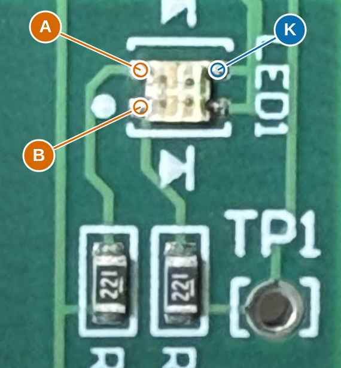

All remaining issues | Schematic | Completed investigation
LED1 colour results recorded
v0.9.35 · In-circuit batch completed; no active measurement form
Completed colour checks: A-K green; B-K red. No repeat measurement requested.
The additional 0.96 V report is preserved without assigning it to either channel until clarified.
LED1: black probe K; red probe A then B

- A: Upper-left LED solder contact in this photo; visible trace to the LED-facing end of R31 (PIC22/RB1 branch).
- B: Lower-left LED solder contact in this photo; visible trace to the LED-facing end of R30 (PIC23/RB2 branch).
- K: Upper-right LED solder contact; common-ground side in the current reconstruction. Keep the black probe here.
| ID | Red probe | Black probe | Condition | Reading |
|---|
| B42 | A | K | Unpowered | Green; voltage not yet assigned |
| B43 | B | K | Unpowered | Red; voltage not yet assigned |
B42/B43 user diode-mode colour report: photo A-K lights GREEN via R31/PIC22 (LED1 native pin2); B-K lights RED via R30/PIC23 (native pin1). Black probe at grounded K. Both native cathodes 3/4 remain on GND; internal die-to-cathode pairing and manufacturer pad numbers are not established by this in-circuit test. Body 1.5 x 1.5 mm; footprint remains unassigned.
No new readings requested here. Recorded result and interpretation.
What follows
- Resolve hidden paths and device behavior - S1 contacts are verified and removed from active work. Q3 stays fitted with identification deferred. Three local-only PIC branches, antenna continuations and powered behavior remain.
- Recover critical component values - 44 ceramic values; prioritize tuning and receiver after topology.
- Finish interface and package mapping - LED colour branches are established. Remaining: LED footprint/internal grounded-pad pairing and motor lead order; exact physical fit is later PCB qualification.
ERC: 1 retained U6/U6A output conflict. U6A is DNP; its regulator symbol remains by your request. Other source and library findings are resolved.